Science of Science — Paper Curation
Collection: Science of Science | Period: 02/2023 ~ 2026-03-23
Research Timeline
본 컬렉션은 2020년부터 2026년까지의 논문 67편을 포함합니다. 최근 2026년에 19편으로 가장 많은 논문이 수집되었습니다.
최고 평점 논문: "Historical Comparison of Gende...", "Scientific production in the e...", "Interdisciplinary papers suppo...". 이 논문들은 대규모 데이터 기반의 실증 분석과 반직관적 발견을 공통적으로 보여주며, science of science 분야의 핵심 질문에 정량적 답변을 제공합니다.
The Diversity-Innovation Paradox in Science

다양성은 혁신을 낳지만, 그 혁신을 만들어낸 소수자 집단은 보상받지 못한다. 미국 박사학위 수여자 약 120만 명(1977-2015)의 학위논문을 분석한 결과, 성별/인종 소수자 그룹이 더 높은 비율로 새로운 개념적 연결(novelty)을 도입하지만, 이들의 새로운 기여는 다수자 그룹 대비 낮은 비율로 후속 연구에 채택(uptake)되며, 동일한 수준의 혁신성을 가져도 교수직 획득 확률이 5~25% 더 낮다.
과학에서 다양성과 혁신, 그리고 경력 보상 사이의 구조적 역설을 120만 명 규모의 데이터로 실증한 획기적 연구로, Science of Science 분야에서 다양성 담론의 기초가 되는 핵심 논문이다. 다만 이름 기반 인구통계 추론과 관찰 연구 설계의 한계로 인과적 해석에는 신중함이 필요하다.
Historical Comparison of Gender Inequality in Scientific Careers Across Countries and Disciplines

남녀 과학자의 연간 출판율은 거의 동일하고(여성 1.33편/년 vs. 남성 1.32편/년), 동일한 총 출판량에 대해 피인용 영향력도 동등하다. 그러나 여성의 높은 이탈률(매년 남성 대비 19.5% 높음)이 짧은 경력 기간을 초래하고, 이것이 경력 전체의 생산성과 영향력 격차의 약 67%를 설명한다.
150만 명의 완전한 출판 경력 데이터를 통해 "생산성 퍼즐"의 근본 원인이 연간 생산성 차이가 아닌 경력 지속 기간의 차이임을 밝힌 기념비적 연구로, 성별 불평등 논의의 패러다임 전환을 이끌었다. Barabási 그룹의 데이터 과학적 역량이 유감없이 발휘된 논문이다.
Rethink Funding by Putting the Lottery First

연구비 배분 과정의 편향을 줄이려면 추첨(lottery)을 심사 마지막 단계가 아닌 **맨 처음 단계에 배치**해야 한다. 시뮬레이션 결과, 'pre-lottery' 시나리오는 기존 1단계(R01), 2단계(ERC), tiebreaker lottery(SNSF) 방식 대비 매몰 비용(sunk cost)을 대폭 줄이면서도 다양성(diversity)과 연구 품질(quality)을 동시에 개선할 수 있다.
연구비 배분의 추첨 시점을 처음으로 옮기자는 발상은 신선하고 시의적절하나, 3페이지 Comment 특성상 실증 근거와 구체적 제도 설계가 부족하여 정책 제언으로서의 설득력이 아직 제한적이다.
OpenAlex: A fully-open index of scholarly works, authors, venues, institutions, and concepts
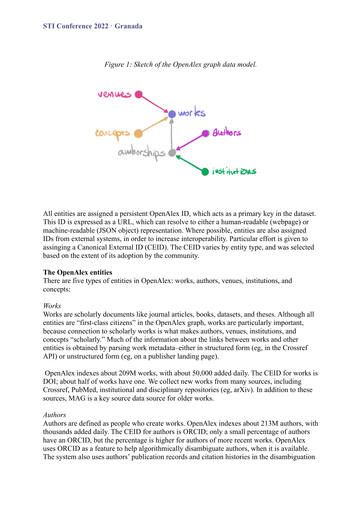
OpenAlex는 Microsoft Academic Graph(MAG) 중단에 대응하여 만들어진 **완전 오픈(100% open data, open API, open-source code)** 학술 지식 그래프로, 약 2억 900만 편의 학술 저작물(works), 2억 1,300만 명의 저자(authors), 12만 4,000개의 출판 매체(venues), 10만 9,000개의 기관(institutions), 6만 5,000개의 개념(concepts)을 색인하며, 매일 약 5만 건의 새로운 저작물이 추가된다.
MAG 중단이라는 학술 인프라 위기에 대한 시의적절하고 실용적인 해법으로, 완전 오픈 원칙과 대규모 데이터 커버리지의 조합이 학술 커뮤니티에 막대한 영향을 미치고 있으나, 기술적 상세와 품질 검증이 짧은 컨퍼런스 논문 형식의 한계로 부족하다.
Updated science-wide author databases of standardized citation indicators
Scopus 데이터(2020년 5월 6일 기준)를 활용하여, **전 분야 상위 10만 명** 및 **각 세부 분야(subfield) 상위 2%** 과학자의 표준화된 인용 지표 데이터베이스를 업데이트하였다. 경력 전체(career-long, ~2019년 말) 및 단일 연도(2019년) 두 가지 버전을 제공하며, 자기인용 포함/제외 복합 인용 지수(composite citation index)와 세부 분야 내 순위를 새로 추가했다.
전 세계 과학자의 인용 영향력을 표준화된 방식으로 비교할 수 있는 실용적 데이터베이스로서 학계에 막대한 영향력을 행사하고 있으나, Scopus 종속성과 "상위 2%" 프레이밍의 오남용 가능성이 근본적 한계로 남아 있다.
Papers and patents are becoming less disruptive over time

1945~2010년 사이 발표된 **4,500만 편의 논문**과 **390만 건의 특허**를 분석한 결과, 과학과 기술 전반에서 **파괴적(disruptive) 연구의 비율이 지속적으로 감소**하고 있다. CD index(consolidation-disruption index)로 측정한 파괴성은 모든 분야에서 일관되게 하락했으며, 이는 논문·특허의 양적 증가가 아닌 **연구 관행의 질적 변화**(좁은 범위의 선행연구 활용, 기존 지식의 점진적 확장 경향)에 기인한다.
과학의 파괴성이 수십 년간 전 분야적으로 감소해왔다는 강력하고 도발적인 실증 결과를 제시한 기념비적 연구이나, CD index의 구조적 한계와 인과 메커니즘의 불충분한 규명이 결론의 해석에 주의를 요한다.
S2ORC: The Semantic Scholar Open Research Corpus

S2ORC는 81.1M개의 영어 학술 논문으로 구성된 대규모 공개 연구 코퍼스로, 8.1M개 오픈액세스 논문의 구조화된 전문(full text), 73.4M개 논문의 초록, 380.5M개의 해결된 인용 링크를 포함하며, 수십 개 학문 분야를 아우르는 당시 최대 규모의 공개 기계판독 가능 학술 텍스트 컬렉션이다.
학술 텍스트 마이닝의 기반 인프라로서 탁월한 기여를 한 자원 논문으로, 81.1M 논문의 통합과 구조화된 전문 제공은 science of science 및 NLP 연구에 광범위한 영향을 미쳤으며, CORD-19 등 후속 프로젝트를 통해 실질적 사회적 임팩트를 입증하였다.
Global citation inequality is on the rise

상위 1% 피인용 과학자의 누적 인용 점유율이 2000년 14%에서 2015년 21%로 증가하였고, 인용 불균형의 지니계수가 0.65에서 0.70으로 상승하여, 글로벌 과학 시스템에서 저자 수준의 인용 불평등이 심화되고 있음을 400만 명 이상의 저자와 2,600만 편의 논문 분석으로 실증하였다.
400만 저자 규모의 글로벌 데이터셋을 활용하여 인용 불평등의 심화를 실증적으로 입증한 중요한 연구로, 인용 인플레이션 보정과 full/fractional count 이중 분석, 국가/기관 수준 분해 등 방법론적으로 견고하며, 과학 정책과 연구 평가 시스템의 재설계에 대한 근거를 제공한다.
Scientific production in the era of Large Language Models
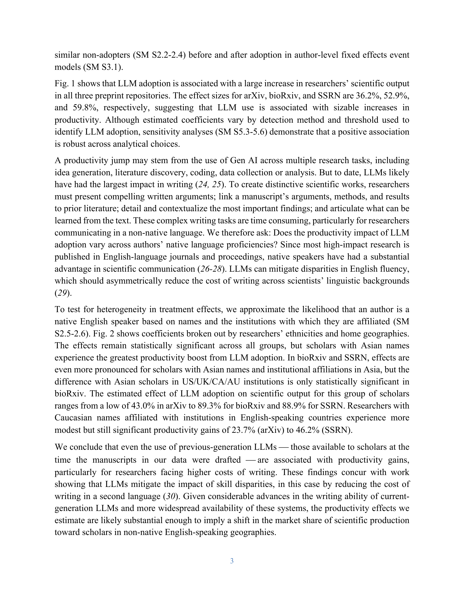
LLM을 논문 작성에 활용한 과학자들은 분야와 배경에 따라 23.7~89.3%의 논문 생산성 증가를 보이며, LLM 사용은 글쓰기 복잡성과 논문 품질 간의 전통적 양의 상관관계를 역전시켜 "언어적으로 복잡하지만 실질적으로 미흡한" 논문의 범람을 초래하고, 동시에 연구자들이 서적, 최신 문헌, 저인용 문헌 등 더 다양한 선행연구를 참조하도록 유도한다.
LLM이 과학 생산을 어떻게 재편하고 있는지를 생산성, 품질 신호, 문헌 발견의 세 차원에서 대규모 데이터로 실증한 획기적 연구로, 특히 글쓰기 복잡성-품질 관계의 역전 발견은 과학 평가 시스템의 근본적 재설계 필요성을 제기하며 Science 게재에 손색없는 시의성과 영향력을 갖춘 논문이다.
Intersectional inequalities in science

미국 과학계에서 인종과 젠더의 교차(intersectionality)는 연구 주제 선택과 인용 영향력에 체계적 불평등을 만들어낸다. 소수 인종/젠더 집단은 자신의 사회적 정체성을 반영하는 주제에 집중하는 동질성(homophily)을 보이며, 이러한 주제 선택은 인용 불이익을 초래하여 주제 간(between-topic)과 주제 내(within-topic) 모두에서 인용 격차가 관찰된다.
교차성 이론을 대규모 계량서지학에 적용하여 인종-젠더-주제-인용의 체계적 관계를 실증한 선구적 연구로, 특히 소수 집단의 이중 인용 불이익(between/within-topic)과 반사실적 지식 손실 추정은 과학 정책의 근거로서 높은 가치를 가지며, 과학의 능력주의 신화에 대한 실증적 도전을 제공한다.
Gender-diverse teams produce more novel and higher-impact scientific ideas

성별 다양성이 높은 연구팀은 동일 성별 팀보다 최대 9.1% 더 새로운(novel) 논문을, 14.6% 더 높은 피인용 상위 논문을 발표한다. 의학 분야 660만 편 논문 분석 결과, 성별 균형이 50:50에 가까울수록 신규성과 영향력이 모두 증가하며, 이 패턴은 의학 45개 하위 분야에서 거의 보편적으로 관찰된다.
660만 편 의학 논문을 활용한 대규모 실증 분석으로, 성별 다양성 팀의 신규성·영향력 우위를 설득력 있게 입증한 중요한 연구이나, 관찰 연구의 한계로 인과 메커니즘 규명은 후속 과제로 남아 있다.
Global patterns of migration of scholars with economic development

학자들의 국제 이주율과 경제 발전(GDP per capita) 사이에는 U자형 관계가 존재한다. 이주율은 GDP가 증가함에 따라 처음에는 감소하다가 약 25,000달러(2017년 PPP 기준)부터 반전하여 다시 증가한다. 이는 일반 인구에서 관찰되는 역U자형(inverted-U) "이주 전환(migration transition)" 패턴과 정반대이다.
3,600만 편 서지 데이터를 활용하여 학자 이주의 U자형 발전-이주 관계를 발견한 중요한 기여이나, Brief Report의 제약으로 메커니즘 분석이 부족하고, 이주 방향·분야별 이질성·인과 분석은 후속 과제로 남아 있다.
Public Use and Public Funding of Science

과학의 공적 사용(public use)과 공적 자금 지원(public funding)은 놀라울 정도로 정렬(aligned)되어 있다. 수천만 건의 과학 논문을 정부 문서, 뉴스 미디어, 특허(시장 발명)의 세 가지 공적 영역에 연결한 결과, 각 영역은 과학 분야를 특화된 방식으로 소비하면서도, 과학계 내부에서 높은 영향력을 가진 연구와 공적 소비 간에 보편적 정렬이 존재하며, 특정 분야의 공적 자금 지원과 그 분야의 공적 사용도 현저하게 일치한다.
과학의 공적 사용과 자금 지원 사이의 정렬을 대규모 데이터로 실증한 중요한 연구로, 과학 투자의 사회적 정당성에 대한 실증적 근거를 제공한다. 다만 PDF 전문 접근 불가로 방법론적 세부사항에 대한 평가에는 한계가 있다.
Coevolution of Policy and Science During the Pandemic
COVID-19 팬데믹 기간 정책 문서는 최신의, 동료심사를 거친, 고영향력 과학 연구를 상당히 활용하고 있다. 정책 문서가 인용한 코로나 연구는 인용하지 않은 연구 대비 과학계 내 피인용이 평균 40배 높으며(67.72 vs. 1.67), 과학 인용의 19.9%가 2020년 출판물로 통상 대비 10배 이상 최신 과학에 의존한다. 그러나 과학의 활용은 기관 유형에 따라 불균등하며, WHO 등 국제기구(IGO)에 집중되어 있고 국가 정부는 간접적으로만 과학을 소비한다.
팬데믹 위기에서 과학과 정책의 실시간 공진화를 대규모로 추적한 시의적절한 연구로, "과학이 들리고 있지만, 모든 곳에서 들리는 것은 아니다(Science is being heard, but not everywhere)"라는 결론이 인상적이다. Policy Forum 형식의 제한으로 방법론적 깊이는 다소 아쉬우나, Science 게재에 걸맞은 임팩트 있는 메시지를 전달한다.
Public Profile Matters: A Scalable Integrated Approach to Recommend Citations in the Wild
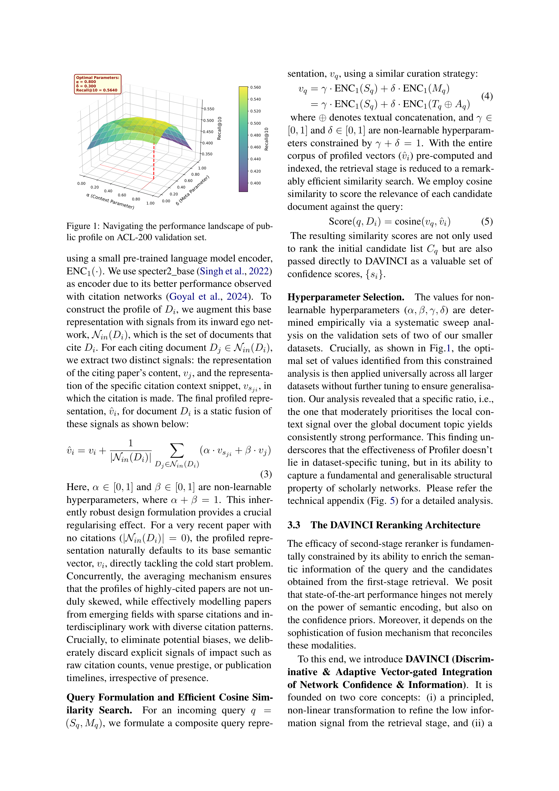
논문의 "공적 프로필(public profile)" -- 인용 네트워크에서 다른 논문들이 해당 논문을 어떻게 인용하는지의 집합적 인식 -- 이 인용 추천의 핵심 신호임을 실증한다. 비학습(non-learnable) Profiler 모듈은 기존 SOTA 대비 검색 시간을 최대 44배 단축하면서 MRR을 45-64% 향상시키고, 110M 파라미터의 DAVINCI 리랭커는 8B 규모의 범용 리랭커를 모든 데이터셋에서 능가한다.
인용 추천 시스템에서 "공적 프로필"이라는 직관적이면서도 효과적인 개념을 제안하고, 비학습 모듈과 경량 리랭커의 조합으로 대규모 범용 모델을 능가하는 실용적 시스템을 구축했다. 방법론적 완성도가 높으나, Science of Science 관점에서의 이론적 기여보다는 정보검색 공학 기여에 가까운 논문이다.
Which stylistic features fool ChatGPT research evaluations?

ChatGPT는 인간 전문가보다 초록의 언어적 복잡성(linguistic complexity)에 더 민감하게 반응하여 높은 점수를 부여한다. UK REF2021에 제출된 99,277편의 논문 초록을 분석한 결과, 34개 평가 단위(UoA) 중 23개에서 Flesch-Kincaid Grade Level과 ChatGPT 점수 간 유의한 양의 상관관계가 나타났으나, REF 전문가 점수에서는 9개 UoA에서만 유의했다. 예를 들어, 임상의학에서 Flesch-Kincaid Grade Level과의 Spearman 상관계수가 ChatGPT 0.329 vs. REF 전문가 0.124로 큰 차이를 보였다.
LLM 기반 연구 평가의 실질적 위험 요소인 언어적 복잡성 편향을 대규모 데이터로 실증한 시의적절한 연구이나, 상관분석에 머물러 인과적 메커니즘 규명과 편향 완화 방안의 실험적 검증이 후속 과제로 남아 있다.
Polymer Science Research in India: A Scientometrics Study
인도의 고분자 과학(Polymer Science) 분야 연구 생산성을 Web of Science 기반으로 분석한 결과, 2010-2020년 총 25,044편이 출판되었으며, 인도는 세계 3위(일부 연도 2위)의 연구 생산국으로 부상했다. IIT Delhi(12.44%)와 IIT Kharagpur(11.56%)가 기관별 최다 출판을 기록했고, 복합재료(composite material, 20.81%)와 재료과학(20.42%)이 주요 하위 분야였다.
인도 고분자 과학의 연구 생산성을 국가-기관-주제별로 정리한 기초적 기술 통계 연구이나, 데이터 범위 불일치, RGR 계산 오류 의심, 주제 분류 오류("Composite number"), 인용/협력 분석 부재 등 방법론적 한계가 심각하여 학술적 기여가 매우 제한적이다.
Risk and Artificial Intelligence Adoption: A Scientometric and Thematic Evolution Analysis Based on Scopus and Web of Science (1990-2025)

AI 도입(adoption)에서 리스크 개념의 진화를 1990-2025년 Scopus/WoS 612편 문헌을 대상으로 계량서지학적으로 분석한 결과, 리스크가 초기 "행동 억제 요인(behavioral inhibitor)"에서 "시스템 수준의 거버넌스 구조(governance construct)"로 전환되는 세 단계의 구조적 변화를 확인했다. 설명가능성(explainability), 감사가능성(auditability), 규제 준수 역량이 새로운 연구 프론티어로 부상하고 있다.
AI 도입에서 리스크 개념의 진화를 주제 매핑, Sankey 진화 분석, 공인용 네트워크로 다각도로 추적한 시도는 의미 있으나, 612편의 제한된 코퍼스, 검색 전략 미공개, "optional" 섹션 존재 등 방법론적 완성도가 부족하며, 게재 저널의 학술적 수준을 고려할 때 해당 분야 주요 연구로 보기 어렵다.
Organisational accounts engaged in scholarly communication on Twitter: Patterns of presence, activity and engagement

GRID, ROR, Overton 3개 기관 데이터베이스와 Altmetric, Crossref Event Data 2개 알트메트릭 데이터베이스를 연결하여 학술 출판물을 트윗한 9,842개 연구/정책 관련 기관 계정을 식별했다. 기관 계정은 1,000만 학술 트위터 사용자 대비 팔로워 수 상위 5%(중앙값 백분위 0.95), 학술 트윗 비중 상위 34%(중앙값 백분위 0.66)로 높은 소셜미디어 자본과 학술적 집중도를 보였으나, 인용(quote)과 답글(reply) 같은 대화형 참여에서는 대다수 기관이 하위권(중앙값 백분위 0.00)에 머물러 '방송형(broadcast)' 커뮤니케이션 패턴을 나타냈다. 정부 기관만이 모든 참여 지표에서 상위 성과를 보였다.
3개 기관 DB와 2개 알트메트릭 DB를 체계적으로 연결하여 학술 커뮤니케이션에 참여하는 기관 계정의 최초 대규모 오픈 데이터셋을 구축하고, 1,000만 사용자 대비 상대적 위치를 정밀하게 분석한 방법론적으로 견고하고 명확하게 작성된 연구로, 알트메트릭스와 과학 커뮤니케이션 분야에 실질적인 기여를 한다.
Modeling Changing Scientific Concepts with Complex Networks: A Case Study on the Chemical Revolution
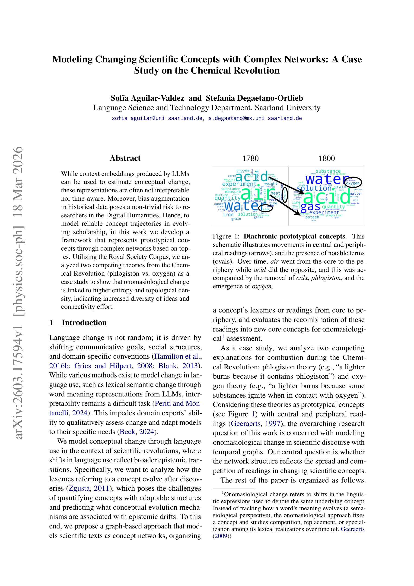
복잡 네트워크 구조는 과학적 개념의 변천을 반영할 수 있는가? 그렇다. 화학혁명 시기 Royal Society Corpus를 분석한 결과, 산소 이론이 플로지스톤 이론을 대체하는 과정에서 개념 네트워크의 엔트로피(topic diversity)와 위상 밀도(topological density)가 유의미하게 증가했다. 즉, onomasiological change(동일 개념을 지칭하는 언어 표현의 변화)가 일어날 때 네트워크의 다양성과 연결 복잡성이 함께 증가하며, 이는 과학혁명의 정량적 지표로 활용될 수 있다.
과학적 개념 변화를 네트워크 구조로 모델링하는 독창적 프레임워크를 제안했으나, 단일 사례에 의존하여 일반화 가능성의 검증이 부족하다.
Interdisciplinary papers supported by disciplinary grants garner deep and broad scientific impact
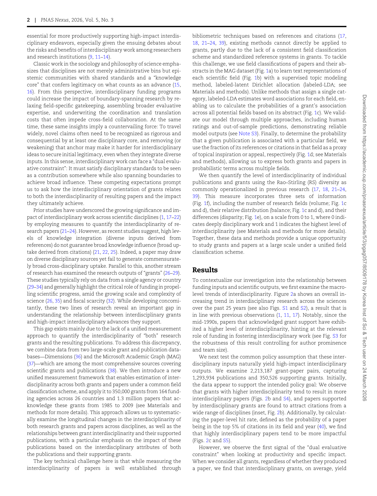
학제간 연구 그랜트가 정말로 높은 영향력의 학제간 연구를 만들어내는가? 역설적이게도, 그렇지 않다. 35만 개의 그랜트와 130만 편의 논문을 분석한 결과, 학제간 그랜트는 학제간 논문을 생산하지만 그 영향력은 오히려 낮았다. 반면 **깊이 있는 단일 분야 그랜트**가 지원한 학제간 논문이 자신의 핵심 분야와 넓은 외부 분야 모두에서 불균형적으로 높은 인용을 받았다(hit rate 기준). 즉, 학제간 혁신은 학제간 펀딩이 아닌 깊은 분야 전문성에 뿌리를 둘 때 가장 큰 영향력을 발휘한다.
학제간 펀딩의 역설을 대규모 데이터로 실증한 과학정책적으로 매우 중요한 연구로, 깊은 분야 전문성이 학제간 혁신의 기반이라는 반직관적 발견이 강력하다.
An empirical analysis of open access citation advantages in library and information science

문헌정보학(LIS) 분야에서 오픈 액세스(OA) 논문이 비OA 논문보다 더 많이 인용되는가? 조건부로만 그렇다. 109,759편의 LIS 저널 논문(2001-2024)을 분석한 결과, 비OA 논문(평균 18.83회)이 OA 논문(평균 17.9회)보다 약간 더 많이 인용되었다. Green OA만이 유의미한 인용 우위(평균 28.55회)를 보였으며, OA 인용 이점은 2001-2004년 9.75회 차이에서 2020-2024년 0.74회로 급격히 감소했다.
LIS 분야 OA 인용 이점의 조건부적 성격을 보여주는 유용한 기술적 분석이나, 교란변수 통제 부족으로 인과적 해석에는 한계가 있다.
Authorship, titles and open access as drivers of citation performance in orthopaedics: a scientometric analysis
정형외과 연구에서 저자 수, 제목 특성, OA 여부가 인용 성과를 좌우하는가? 그렇다, 다만 효과 크기는 작다. 97,806편의 정형외과 논문(2010-2020)을 분석한 결과, 저자 1명 추가 시 연간 인용 +0.108회, OA 논문은 +0.175회/년의 이점을 보였다. 제목에 콜론(+0.314)이나 대시(+0.187)가 있으면 인용이 증가했으나, 물음표(-0.476)나 전체 대문자 사용(평균 0.71회/년)은 인용을 감소시켰다. 연구 설계별로는 네트워크 메타분석(6.64회/년)이 최고, 코멘터리(0.25회/년)가 최저였다.
대규모 데이터를 활용했으나 극히 낮은 설명력과 핵심 교란변수 미통제로 인해 인용 성과의 "동인"이라기보다 피상적 상관관계를 보고하는 데 그쳤다.
Bridging the gap between science and society: Mapping libraries' strategies for engaging in the research impact process through semantic analysis

도서관은 과학 연구의 사회적 영향력 창출 과정에서 어떤 전략을 사용하는가? UK Research Excellence Framework(REF)의 465개 도서관 관련 사례를 LLM+BERTopic으로 분석한 결과, 5가지 핵심 전략이 도출되었다: (1) 미디어 아웃리치와 공공 참여, (2) 공공 대화와 문화 전시, (3) 예술 협업과 체험형 경험, (4) 디지털 콘텐츠 창작과 지식 보급, (5) 대규모 이벤트 운영. 도서관의 기여는 예술·인문(76%)에 집중되며, 문화적(67%)·사회적(22%) 영향이 주를 이루었다.
도서관의 연구 영향력 매개 역할을 최초로 체계적으로 매핑한 의미 있는 시도이나, 기술적 분석에 머물러 인과적 효과 검증이 향후 과제로 남는다.
OpenAlex in focus: Metadata quality of publication type and language fields in an open peer review corpus

OpenAlex의 출판 유형 및 언어 메타데이터는 얼마나 정확한가? 6,640건의 오픈 피어리뷰 관련 논문을 수동 검증한 결과, **43%(2,878건)에서 출판 유형 불일치**, **3.3%(222건)에서 언어 불일치**가 발견되었다. 가장 큰 문제는 'Article' 라벨의 과용으로, 실제로는 Editorial, Opinion/Commentary, 기타 유형인 자료들이 모두 'Article'로 분류되어 있었다. Crossref 유형과 비교 시 Peer Review와 Proceeding Paper 범주에서 OpenAlex와의 괴리가 특히 컸다.
OpenAlex 메타데이터의 구체적 품질 문제를 체계적으로 문서화한 유용한 연구로, 계량서지학 연구자들에게 데이터 전처리의 중요성을 환기시킨다.
Introducing multiverse analysis to bibliometrics: The case of team size effects on disruptive research
소규모 팀이 대규모 팀보다 더 파괴적인(disruptive) 연구를 생산한다는 Wu et al.(2019)의 발견은 모델 선택에 따라 얼마나 달라지는가? Multiverse 분석으로 모든 합리적인 모델 조합을 검증한 결과, 팀 크기가 disruption score에 미치는 **부정적 효과 자체는 강건**했다(모든 모델에서 음의 계수). 그러나 **효과 크기는 모델 사양에 따라 상당히 변동**하며, 특히 인용 인플레이션(citation inflation) 통제 여부와 disruption index 조작화 방식이 결과에 가장 큰 영향을 미쳤다.
Multiverse 분석이라는 강력한 방법론을 계량서지학에 도입하여 모델 불확실성의 투명한 보고를 가능하게 한 방법론적 기여가 탁월한 연구다.
Information Pathways in Online Science Communication: The Role of Platform Actors and News Media

COVID-19 관련 과학 논문은 소셜미디어와 뉴스미디어 사이에서 어떤 경로로 확산되는가? 124만 트윗과 21.1만 뉴스 기사를 분석한 결과, 가장 영향력 있는 트위터 계정은 주로 의학·연구 자격을 가진 개인이었다. 그러나 **반과학적 입장(contrarian)을 가진 소수의 자격 보유 전문가**를 조직적으로 증폭시키는 조정된(coordinated) 네트워크가 발견되었다. 뉴스미디어는 슈퍼스프레더가 트위터에서 논문을 언급한 **이후에** 보도하는 경향이 있었으며, 주류 매체는 친과학 전문가와, 저신뢰 매체는 반과학 전문가와 같은 논문을 다루었다.
COVID-19 과학 커뮤니케이션에서 소셜미디어와 뉴스미디어 간 정보 흐름의 다층적 구조를 실증적으로 밝힌 시의적절하고 통찰력 있는 연구다.
BibFusion: A Python package to integrate, deduplicate, and harmonize exported bibliographic records from Scopus and Web of Science for bibliometric analysis
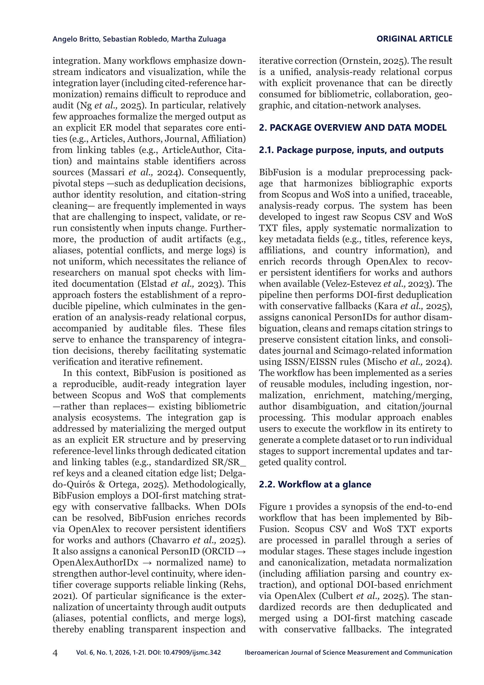
Scopus와 Web of Science에서 내보낸 서지 데이터를 어떻게 하나의 신뢰할 수 있는 분석용 코퍼스로 통합할 수 있는가? BibFusion은 DOI 우선 중복 제거, ASCII/대문자 정규화, OpenAlex 기반 식별자 보강, ORCID/OpenAlexAuthorID를 활용한 저자 동명이인 해소를 수행하는 Python 패키지다. 기업 마케팅 쿼리 시연에서 436개 원천 레코드를 253개 고유 주요 저작물로 통합하고, 8,569편의 통합 코퍼스를 생성했다.
Scopus-WoS 통합이라는 실용적 문제에 대한 체계적 해결책을 제시하나, 성능 검증과 기존 도구 대비 우위 입증이 부족하여 도구의 가치 판단이 어렵다.
Rethinking Thematic Evolution in Science Mapping: An Integrated Framework for Longitudinal Analysis

과학 지식의 종단적 주제 진화를 추적할 때, 주제 탐지와 시간적 연결을 하나의 일관된 관계적 프레임워크에서 수행할 수 있는가? 그렇다. 기존 방법은 공동어(co-word) 네트워크에서 관계적으로 주제를 탐지하면서도 시간적 연결은 단순 어휘 중첩(set-theoretic overlap)으로 추론하는 구조적 비대칭이 있었다. 본 연구는 퍼지 문서 소속(fuzzy document affiliation)과 중심성 가중 연계 강도(lineage-strength measure)를 도입하여 주제의 연속성을 관계 구조의 재구성으로 모델링하는 통합 프레임워크를 제시했다.
종단적 과학 매핑의 방법론적 비일관성을 이론적으로 명확히 진단하고 통합적 해결책을 제시했으나, 실증 검증의 부재가 현 단계의 주요 한계다.
Tenure and research trajectories

테뉴어는 연구자의 연구 궤적을 어떻게 바꾸는가? 15개 학문 분야 12,000명 이상의 미국 대학 교수를 추적한 결과, 출판 비율은 테뉴어 트랙 동안 급격히 상승하여 **테뉴어 직전 해에 정점**을 찍었다. 테뉴어 이후 궤적은 분야에 따라 극명하게 갈렸다: 실험실 기반 분야(생물학, 화학 등)에서는 높은 산출을 유지한 반면, 비실험실 분야(수학, 사회학, 경제학 등)에서는 상당히 감소했다. 한편 테뉴어 이후 교수들은 **더 새로운(novel) 연구를 수행**했지만, **고인용 논문 비율은 감소**했다.
테뉴어의 다차원적 효과를 전례 없는 규모와 범위로 실증한 과학학(science of science)의 기념비적 연구로, 학술 시스템 설계에 대한 근거 기반 논의에 핵심 기여를 한다.
Are disruptive papers more likely to impact technology and society?

파괴적(disruptive) 논문이 기술과 사회에 더 큰 영향을 미치는가? 역설적이게도, CD index가 높은 논문은 특허 인용, 임상시험 활용, 뉴스 보도, 소셜미디어 확산 확률이 오히려 **낮았다**. 그러나 저자들이 제안한 "disruptive citation"(절대적 파괴적 인용 수) 지표로 측정하면, 파괴적 영향이 높은 논문은 기술·사회적 영역에 영향을 미칠 확률이 **유의미하게 높았다**. 이 차이는 CD index가 비율 지표로서 가지는 편향에 기인하며, 특히 최근 20년과 STEM 분야에서 두드러졌다.
CD index의 사회적 영향 측면에서의 편향을 대규모 데이터로 실증하고 보완 지표를 제안한 의미 있는 연구로, 과학의 파괴성 측정 논의에 중요한 기여를 한다.
Predicting Scientific Breakthroughs Based on Structural Dynamic of Citation Cascades

인용 캐스케이드의 동적 구조 변화로 과학적 돌파구를 예측할 수 있는가? 그렇다. 기존 정적 스냅샷 방식 대비, 인용 캐스케이드를 시간 순서로 성장시켜 동적 궤적을 추출하면 노벨상 수상 논문 예측에서 ROC-AUC가 약 **7% 향상**되었다. 기본 위상 지표(평균 차수, 클러스터링 계수 등), PageRank, von Neumann 그래프 엔트로피의 동적 궤적이 돌파구 논문을 구분하는 데 효과적이었으며, 기존 방법보다 **더 이른 시점에서의 예측**도 가능했다.
인용 캐스케이드의 동적 구조 진화라는 새로운 관점을 도입하여 돌파구 예측 성능을 개선했으나, 제한된 벤치마크와 실용적 성능 수준의 한계가 남아있다.
Do novel papers attract more social attention?

새로운(novel) 논문이 더 많은 사회적 관심을 끄는가? 그렇다. 경제학·경영학 분야 31만 편 이상의 논문(2012-2019)을 분석한 결과, 새로운 논문은 비새로운 논문 대비 **Altmetric Attention Score가 2-3배 높았다**. 이 효과는 상위 저널과 오픈 액세스 논문에서 특히 강했다. 인용 수를 통제해도 새로움의 긍정적 효과는 유지되었으며, Altmetric 하위 지표 중 Mendeley와 Twitter에서 가장 큰 차이가 나타났다.
과학적 새로움이 사회적 관심을 높인다는 직관적이지만 미검증된 가설을 대규모 데이터로 실증한 유용한 연구로, 연구 평가의 다차원적 접근에 기여한다.
The altering landscape of US-China science collaboration: from convergence to divergence
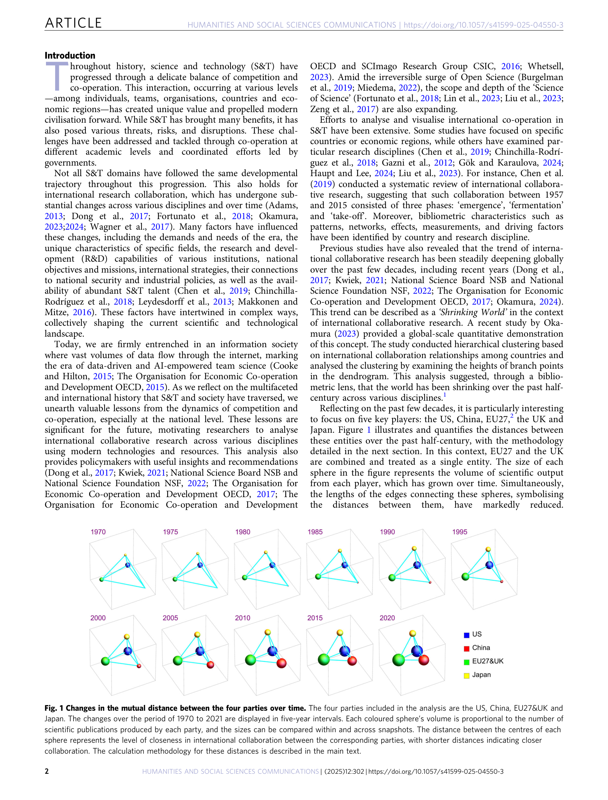
미-중 과학 협력의 거리는 지난 수십 년간 어떻게 변화했는가? OpenAlex 데이터를 활용한 분석 결과, 미-중 협력은 2000년대부터 급속한 **수렴(convergence)** 단계를 거쳤으나, 약 2019년을 기점으로 **발산(divergence)** 단계에 진입했다. 이 역전은 다른 국가 쌍(미-EU, 미-일 등)에서는 관찰되지 않는 미-중 고유의 현상이며, 논문 식별자 기반과 연구자 식별자 기반 두 가지 접근 모두에서 확인되었다. 이는 글로벌 과학 협력의 "축소하는 세계(Shrinking World)" 추세에 대한 예외적 사례다.
미-중 과학 협력의 수렴-발산 전환을 다차원적으로 실증한 시의적절한 연구로, 과학 외교와 국제 연구정책 논의에 중요한 근거를 제공한다.
Forecasting the future of artificial intelligence with machine learning-based link prediction in an exponentially growing knowledge network
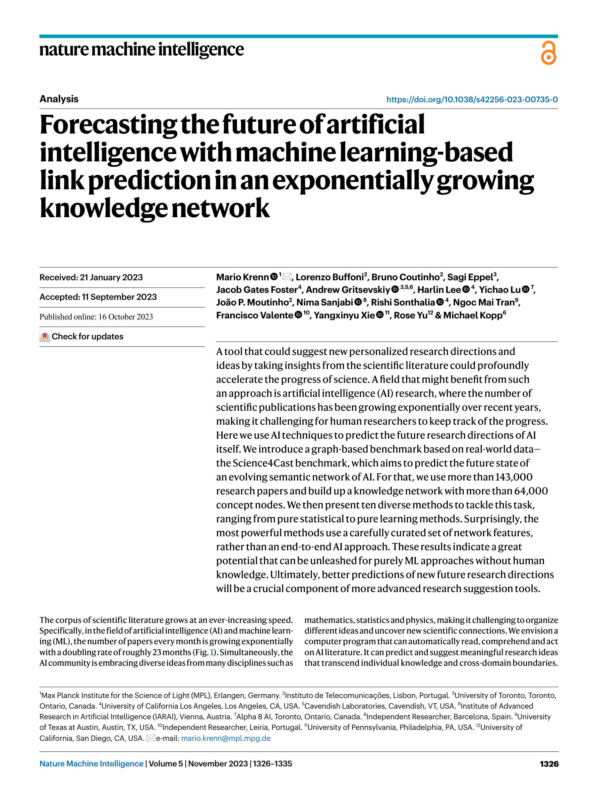
AI 분야의 미래 연구 방향을 AI 기법으로 예측할 수 있는가? 143,000편의 arXiv 논문에서 64,000개 이상의 개념 노드와 1,800만 개의 엣지로 구성된 의미 네트워크를 구축하고, 10가지 통계·ML 방법으로 미래 링크(아직 함께 연구되지 않은 개념 쌍)를 예측한 결과, **정교하게 설계된 네트워크 특성(hand-crafted features)을 사용하는 방법이 엔드투엔드 딥러닝 방법보다 우수**했다. Science4Cast 벤치마크에서 높은 예측 정확도를 달성하여 AI 연구 방향 예측의 가능성을 입증했다.
AI 연구 방향 예측이라는 야심찬 비전을 실세계 벤치마크와 다양한 방법론 비교로 구체화한 선구적 연구로, 과학적 발견 지원 AI의 새로운 패러다임을 제시한다.
SciSciNet: A large-scale open data lake for the science of science research
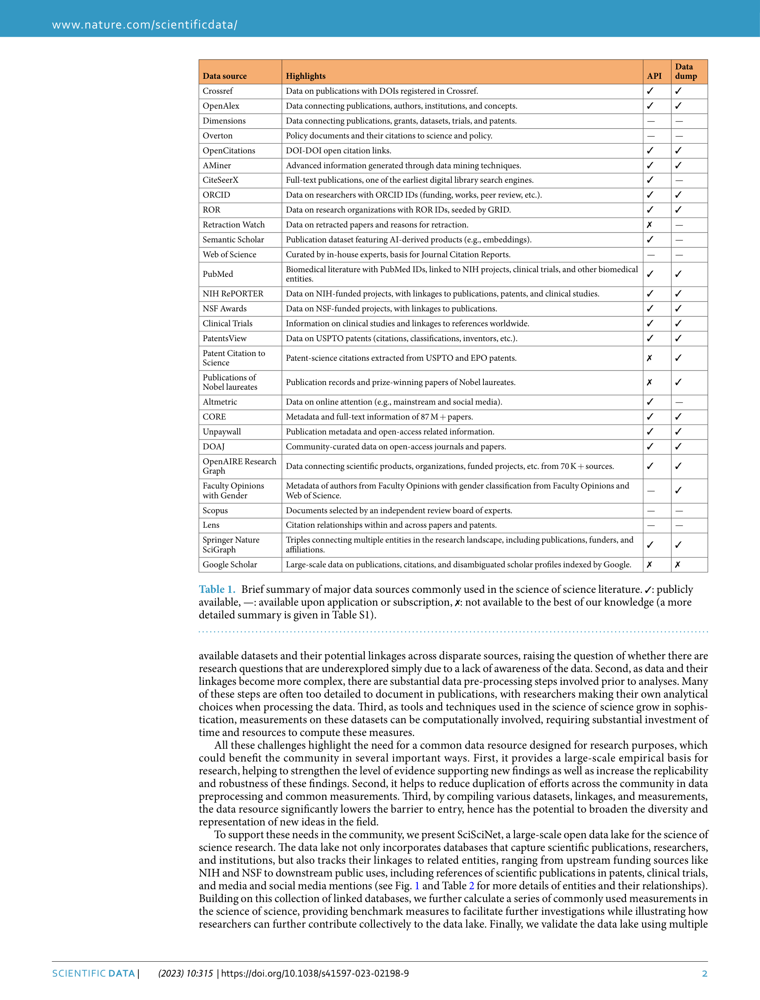
과학학(science of science) 연구를 위한 통합 데이터 인프라를 어떻게 구축할 수 있는가? SciSciNet은 1억 3,400만 편 이상의 과학 출판물과 펀딩(NIH, NSF), 특허 인용, 임상시험, 미디어/소셜미디어 언급 등 수백만 개의 외부 연결을 포괄하는 대규모 오픈 데이터 레이크다. 전처리 단계와 분석 선택을 상세히 문서화하고, 자주 사용되는 지표(disruption index, novelty, interdisciplinarity 등)를 사전 계산하여 제공함으로써, 진입 장벽 낮추기, 중복 노력 감소, 재현성 향상, 아이디어 다양성 확대에 기여한다.
과학학 연구의 데이터 인프라를 혁신적으로 통합한 커뮤니티 자원으로, 분야의 재현성과 접근성을 근본적으로 개선할 잠재력을 가진다.
Forecasting high-impact research topics via machine learning on evolving knowledge graphs
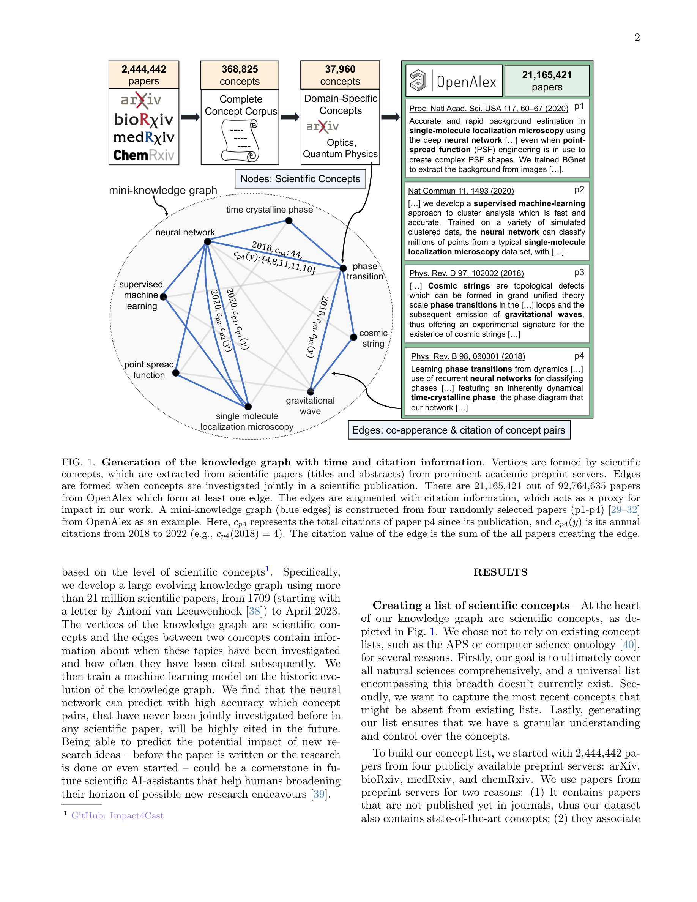
아직 출판되지 않은 새로운 연구 아이디어의 영향력을 미리 예측할 수 있는가? 2,100만 편의 논문으로 구축한 진화하는 지식 그래프(의미 네트워크 + 인용 네트워크)에 머신러닝을 적용한 결과, 지금까지 한 번도 함께 연구되지 않은 개념 쌍이 미래에 **높은 인용을 받을지를 AUC 0.9 이상의 정확도로 예측**할 수 있었다. 이는 연구가 완료되기 전, 아이디어 단계에서 영향력을 예측하는 최초의 대규모 시연이다.
아이디어 단계에서 연구 영향력을 예측하는 혁신적 접근으로, 과학적 발견을 지원하는 AI의 가능성을 한 단계 끌어올린 연구다.
Introducing the open biomedical map of science

상업적 데이터에 의존하지 않는 공정(FAIR)한 생의학 과학 지도를 만들 수 있는가? PubMed 인용 데이터베이스와 MeSH 통제어휘를 사용하여, 저널과 MeSH 디스크립터 간 이모드 네트워크를 구축하고 ZMLT 알고리즘으로 지도화한 결과, **오픈 생의학 과학 지도(OBMS)** 프로토타입이 완성되었다. PubMed에 인덱싱된 18,234개 저널 중 34.6%가 UCSD 과학 지도와 겹쳤으며, MEDLINE에 최소 20편 이상 인덱싱된 8,209개 저널이 지도에 포함되었다.
FAIR 원칙에 부합하는 오픈 과학 지도의 필요성과 가능성을 제시한 의미 있는 초기 시도이나, 프로토타입 수준으로 타당성 검증과 완성도 면에서 개선이 필요하다.
Identifying interdisciplinary emergence in the science of science: combination of network analysis and BERTopic
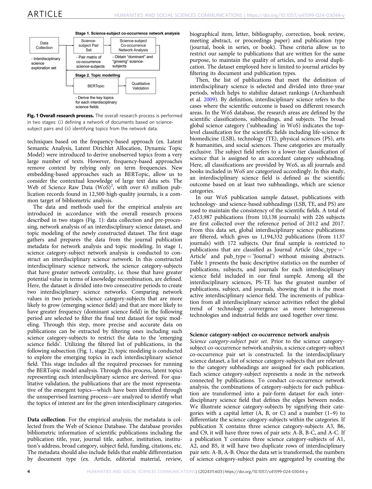
네트워크 분석(Eigenvector centrality)과 BERTopic을 결합하여 글로벌 학제간 과학의 emergence를 식별하는 새로운 방법론을 제시한다. Web of Science 메타데이터 약 745만 건(2012-2017) 중 학제간 논문 119만여 건을 분석한 결과, dominant science와 growing science가 명확히 구분되며, growing-science의 Eigenvector centrality는 다음 기간에 평균 0.348로 기타(0.093) 대비 약 3.7배 높은 값을 보여, 성장하는 학제간 분야가 실제로 영향력이 커짐을 확인했다. 주요 emerging topic으로 green technology와 health-related technology가 전 학제간 카테고리에서 공통적으로 나타났다.
네트워크 중심성과 BERTopic을 결합하여 글로벌 학제간 emergence를 탐지하는 독창적 프레임워크를 제시했으나, 임계값 민감도 분석 부재, 제한된 시간 범위, 기존 방법론과의 비교 실험 결여로 방법론적 엄밀성이 다소 부족하다.
Mapping scientific communities at scale
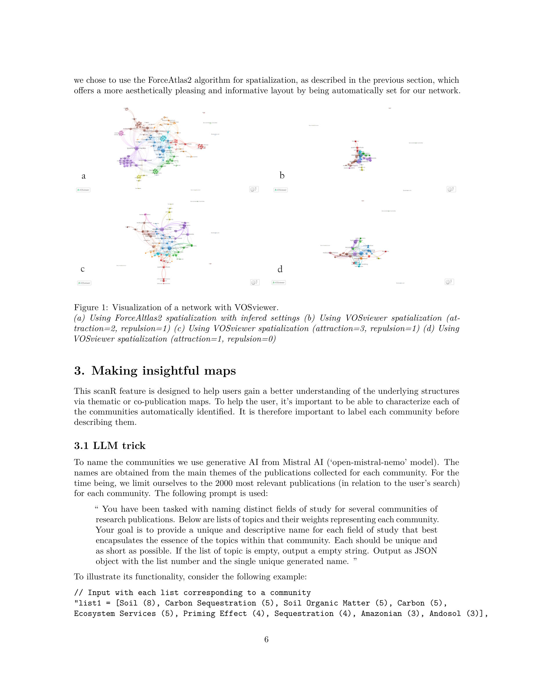
프랑스 연구 포털 scanR의 약 400만 건 논문 메타데이터를 기반으로, Elasticsearch aggregation으로 상위 2,000개 strongest link를 추출하고, Graphology(ForceAtlas2 + Louvain)로 네트워크를 구축/시각화하며, Mistral Nemo LLM으로 커뮤니티 레이블링, OpenAlex 인용 데이터로 hot topic을 탐지하는 확장 가능한(scalable) 과학 커뮤니티 매핑 파이프라인을 제시한다. 기존 VOSviewer 등의 노드 필터링 방식 대신 링크 필터링 방식을 채택하여 대규모 코퍼스에서도 실시간 웹 인터랙션이 가능한 도구를 구현했다.
대규모 bibliometric 데이터의 실시간 네트워크 매핑이라는 실용적 문제를 해결하는 오픈소스 시스템을 제시했으나, 학술 논문으로서의 깊이가 부족하며 정량적 평가와 검증이 전무하여 기술 보고서(technical report) 수준에 머문다.
Science Mapping and Science Maps
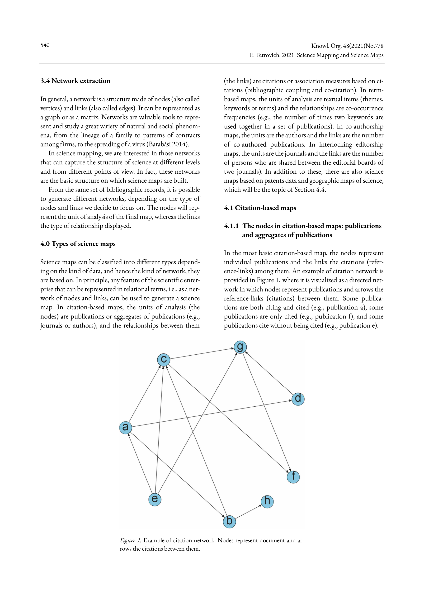
Science mapping의 개념적, 이론적, 방법론적 쟁점을 포괄적으로 정리한 백과사전적 리뷰 논문이다. Citation-based map(direct citation, bibliographic coupling, co-citation), term-based map(co-word analysis, NLP 기반), co-authorship network, interlocking editorship network, patent map, geographic map 등 주요 유형을 체계적으로 분류하고, 데이터 수집부터 전처리, 네트워크 추출, 정규화, 시각화(graph-based vs. distance-based), enrichment(clustering, overlay), 해석에 이르는 7단계 워크플로우를 제시한다. 또한 science map의 객관성, 출판된 과학 vs. 실행 중인 과학, 인용의 의미 등 인식론적 쟁점까지 논의한다.
Science mapping 분야의 개념적, 방법론적 지형을 비전문가도 이해할 수 있도록 명쾌하게 정리한 우수한 입문서로, 인식론적 논의까지 포함하여 깊이가 있으나, embedding/deep learning 등 최신 방법론의 부재가 아쉽다.
When text mining meets science mapping in the bibliometric analysis: A review and future opportunities
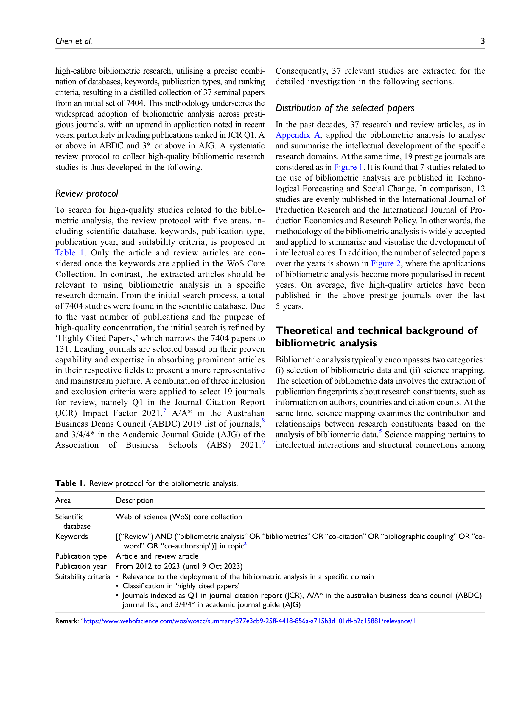
WoS Core Collection에서 highly cited paper 중 JCR Q1/ABDC A 이상/AJG 3* 이상 저널의 37편 bibliometric review 논문을 분석하여, science mapping의 4단계 프로세스(방법 선택 → occurrence matrix 구축 → similarity 측정 → post-hoc 분석)를 체계화하고, co-citation이 59.4%로 가장 많이 사용되는 방법임을 확인했다. 이를 바탕으로 text mining 5대 기법(information extraction, document clustering, topic modeling, text summarization, sentiment analysis)과 science mapping의 통합 가능성을 매핑하여, topic modeling/text summarization/sentiment analysis가 아직 충분히 탐구되지 않은 영역임을 제시한다.
Science mapping의 수학적 프로세스를 통합적으로 정리하고 text mining과의 교차 매핑을 통해 연구 기회를 제시한 유용한 개관이나, 실증적 검증 없이 개념적 제안에 그치며 선정 기준의 과도한 제한으로 표본 대표성에 한계가 있다.
Comparative science mapping: a novel conceptual structure analysis with metadata
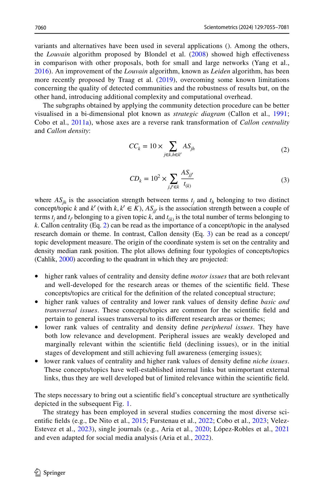
기존 co-word analysis 기반 strategic diagram을 메타데이터(저자, 기관, 지역 등)로 세분화하여 복수 관찰 단위의 conceptual structure를 하나의 joint representation에서 비교할 수 있는 "comparative science mapping" 기법을 제안한다. 이탈리아 9개 공공 종양학 IRCCS(연구-입원-의료기관)의 2000-2019년 WoS 논문 45,320편 중 상위 25% NCS 5,686편을 분석하여, 3개 시기별 기관별 연구 주제의 centrality-density 위치를 joint strategic diagram으로 시각화했다. 그 결과 expression, survival, chemotherapy가 공통 주요 주제이며, 시간에 따라 기초 종양생물학에서 환자 중심 연구(survival, quality-of-life)로 전환되는 패턴을 기관별로 비교 가능하게 보여주었다.
Co-word analysis에 메타데이터 세분화를 결합한 comparative science mapping은 방법론적으로 견실하고 정책적 활용 가치가 높은 독창적 기여이나, joint strategic diagram의 시각적 복잡성과 단일 사례 의존이 일반화 가능성에 제약을 준다.
Mapping Knowledge: Topic Analysis of Science Locates Researchers in Disciplinary Landscape

Topic modeling과 compositional data analysis(CoDa), 기하학적 데이터 분석(GDA)을 결합하여 개별 연구자를 학문 분야의 지식 공간 내에 배치하는 "인식론적 좌표계(epistemological coordinate system)"를 구축했다. 체코 공화국의 R&D 정보 시스템에서 수집한 1,039,577편의 논문(838,428편 텍스트 포함)과 118,560명의 저자 데이터를 사용하여, 과학 지식 공간의 주요 구조축이 Culture-Nature(분산의 25.1%), Life-Non-life(15.3%), Materials-Methods(7.7%)의 세 가지임을 밝혔다.
Topic modeling과 compositional/geometric data analysis를 결합하여 개별 연구자를 인식론적 좌표 위에 배치하는 독창적이고 방법론적으로 정교한 연구이나, 체코 단일 국가 데이터와 정적 분석이라는 한계가 일반화 가능성을 제약한다.
Hierarchical Classification of Research Fields in the "Web of Science" Using Deep Learning

Deep learning 기반 계층적 텍스트 분류 시스템을 구축하여 학술 논문의 초록만으로 3단계 계층(discipline 44개, field 718개, subfield 1,485개)에 자동 분류하는 체계를 제시했다. Microsoft Academic Graph(MAG)의 1.6억 편 초록을 대상으로 CNN, RNN, Transformer 모델 총 3,140개 실험을 수행한 결과, single-label 분류의 77.13%, multi-label 분류의 78.19%에서 정확도 90% 이상을 달성했다. 이 분류 체계를 활용하여 44개 분야 및 718개 field 간 학제 간 인용 점수(interfieldness score)를 산출했다.
44개 학문 분야 전체를 아우르는 통합적 계층 분류 시스템과 field 수준 학제 간 인용 분석이라는 야심찬 목표를 제시하지만, 2018년 MAG 데이터와 기본적 neural network에 의존한 기술적 접근이 현재 기준으로 다소 구식이며, 분류 체계 설계의 주관성과 일부 모델의 저조한 성능이 아쉽다.
A Survey on Knowledge Organization Systems of Research Fields: Resources and Challenges

학술 분야의 Knowledge Organization Systems(KOSs) -- 용어 목록, 분류 체계(taxonomy), 시소러스(thesaurus), 온톨로지(ontology) -- 에 대한 최초의 체계적 서베이로, 45개 KOS를 scope, structure, curation, external links, usage의 5가지 차원과 15개 세부 특성으로 분석했다. 19개 주요 학문 분야 중 7개("History", "Political Science", "Environmental Science", "Material Science", "Geography", "Sociology", "Business")에는 전용 KOS가 존재하지 않으며, 포괄적이면서 세분화되고 지속 관리되며 개방적인 multi-field KOS는 현재 없다는 것이 핵심 발견이다.
학술 분야 KOS 생태계에 대한 최초의 체계적 서베이로서 45개 시스템을 통일된 프레임워크로 분석하고 핵심 격차와 도전과제를 명확히 정의한 기여가 크지만, 정량적 비교와 LLM 시대의 KOS 역할에 대한 심층 논의가 보완되면 더 큰 영향력을 가질 수 있다.
What's In Your Field? Mapping Scientific Research with Knowledge Graphs and Large Language Models

LLM(Llama-3 70B)을 활용하여 과학 논문의 제목과 초록에서 9가지 범주(model, task, dataset, field, modality, method, object, property, instrument)로 구조화된 개념을 추출하고, 이를 SQL 데이터베이스와 knowledge graph로 구축하여 과학 문헌의 체계적 분석을 가능하게 하는 프로토타입 시스템을 제시했다. 3개 분야(천체물리학, 유체역학, 진화생물학)의 arXiv 논문 30,000편에서 개념을 추출하여, 분야 내 modality 분포(천체물리학에서 spectra 35.36%, image 5.58%), 시간적 트렌드, 학제 간 방법론 교차 등을 정량적으로 분석할 수 있음을 시연했다.
과학 개념의 기능적 역할별 분류라는 아이디어와 SQL 쿼리 가능한 구조화 지식 시스템의 방향성은 흥미롭지만, 44% precision/31% recall의 낮은 추출 정확도와 20편에 불과한 평가 세트로 인해 실용성과 신뢰성 면에서 프로토타입 수준에 머무른다.
Science as exploration in a knowledge landscape: tracing hotspots or seeking opportunity?

과학자의 연구 주제 선택 및 전환을 Geographic Information System(GIS) 프레임워크를 차용하여 "지식 공간에서의 탐험"으로 모델링했다. APS 물리학 데이터셋(258,000편, 13,720명)과 MAG 5개 분야 데이터로 분석한 결과, 과학자의 주제 전환 거리는 log-normal 분포(scale-free가 아님)를 따르며 대부분 단거리 이동에 그친다. Gravity model(CPC=0.82)이 radiation model(CPC=0.534)을 압도적으로 능가하여, 과학자의 주제 전환이 분야 간 "기회"보다는 연구 인구 밀도(hotspot)와 지식 거리에 의해 주로 결정됨을 밝혔다.
GIS의 인간 이동 패턴 분석 프레임워크를 과학자의 지식 공간 탐험에 창의적으로 적용하여, 대부분의 과학자가 기회 탐색보다 hotspot 추종 전략을 따른다는 실증적 결론을 6개 분야에서 강건하게 도출한 방법론적으로 정교한 연구이다.
Impacts of inter-institutional mobility on scientific performance from research capital and social capital perspectives
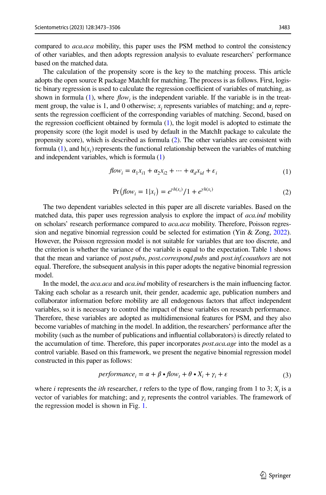
AI 분야 연구자 9,950명의 기관 간 이동(학계→학계 vs. 학계→산업계)이 개인 성과에 미치는 영향을 propensity score matching(PSM)과 negative binomial regression으로 분석한 결과, 학계→산업계(aca.ind) 이동은 research capital(논문 수, 교신저자 논문 수) 축적에는 부정적이나, social capital(공저자 수, 고영향력 공저자 수) 축적에는 학계→학계(aca.aca) 이동보다 더 긍정적인 영향을 미친다.
Research capital과 social capital 프레임워크를 통해 AI 분야 연구자의 이동 유형별 성과 차이를 체계적으로 분석한 유의미한 연구이나, 성과 측정이 양적 지표에 한정되고 MAG 데이터의 서비스 종료로 재현성에 한계가 있어 방법론적 보완이 필요하다.
Unsupervised embedding of trajectories captures the latent structure of scientific migration

Word2vec(Skip-Gram Negative Sampling)가 이동의 gravity model과 수학적으로 동치임을 증명하고, 300만 명 과학자의 소속 이동 궤적에 적용하여 지리, 언어, 문화, 학술적 위신(prestige) 등 과학 이주의 다층적 구조를 단일 벡터 공간에 인코딩할 수 있음을 보여주었다. Embedding distance는 지리적 거리 대비 기관 간 이동 flux 설명력이 2배 이상(R2 = 0.48 vs. 0.22)이며, SemAxis로 추출한 prestige 축은 Times 대학 랭킹과 Spearman rho = 0.73의 강한 상관을 보인다.
Word2vec와 gravity model의 수학적 동치성 증명이라는 이론적 기여와, 다중 스케일에서 과학 이주의 지리-언어-문화-위신 구조를 체계적으로 밝혀낸 실증 분석이 결합된 탁월한 연구로, neural embedding을 이주 연구에 적용하는 이론적 기반과 방법론적 프레임워크를 확립한 기념비적 논문이다.
Mapping the changing structure of science through diachronic periodical embeddings

학술 저널의 통시적(diachronic) 임베딩을 통해 1950년대부터 2010년대까지 과학의 구조 변화를 추적한 결과, 대부분의 저널은 전문화(specialization) 경향을 보이지만 생명과학 저널은 오히려 학제간 융합이 증가하고 있으며, 신규 저널의 로컬 클러스터 형성을 모니터링함으로써 AIDS 연구, 나노기술 등 신흥 연구 주제를 식별할 수 있다.
전산언어학의 통시적 임베딩을 과학 진화 분석에 창의적으로 적용하여 저널 수준의 의미 변화 추적, 학제간성 동태 분석, 신흥 주제 감지라는 다차원적 분석 프레임워크를 제시한 견실한 연구이나, 시간 해상도의 거칠기와 신흥 주제 감지의 정량적 검증 부재가 아쉽다.
The Price-Pareto growth model of networks with community structure

기존 3DSI(Price-Pareto) 인용 네트워크 성장 모델을 커뮤니티 구조로 확장하여, 각 학문 분야(커뮤니티)별로 고유한 성장률, 참고문헌 수, 선호적 부착 비율을 갖는 해석적(analytical) 프레임워크를 제시했다. 각 커뮤니티의 인용 분포가 점근적으로 Pareto type II 분포에 수렴함을 증명하고, Gini 지수의 닫힌 형태 공식을 유도했으며, Cora(2,708 노드)와 DBLP(481,387 노드) 실제 네트워크에서 모델의 적합성을 검증했다.
선호적 부착과 커뮤니티 구조를 결합한 최초의 해석적 네트워크 성장 모델로서 수학적 완성도가 뛰어나고 Pareto 수렴 및 Gini 공식 등 이론적 기여가 탁월하나, 실증 검증의 범위가 CS 분야에 한정되고 주의 감쇠 부재로 인한 고차수 노드 과대추정 문제가 실용적 한계로 남는다.
AI-Driven Automation Can Become the Foundation of Next-Era Science of Science Research
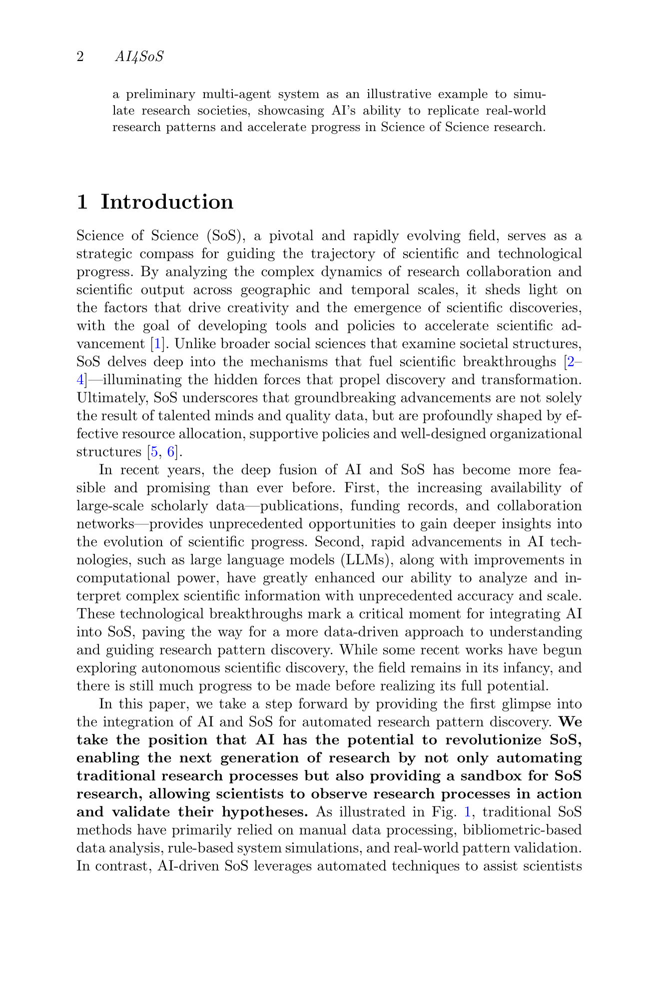
AI 기반 자동화가 Science of Science(SoS) 연구의 차세대 기반이 될 수 있다는 전망을 제시하며, 5단계 자동화 계층(Level 0~4)을 정의하고, 100만 에이전트 규모의 멀티에이전트 시스템을 통한 연구 사회 시뮬레이션 개념 증명(proof-of-concept)을 수행했다. 시뮬레이션 결과, 민족 다양성-인용 수 양의 상관(r=0.48, p=0.036)과 대학 순위-인용 수 음의 상관(r=-0.48, p=0.039) 등 실제 데이터의 패턴이 부분적으로 재현되었다.
AI4SoS라는 새로운 연구 방향을 체계적으로 정의하고 100만 에이전트 규모의 시뮬레이션을 시도한 야심적 비전 논문이나, 개념 증명의 검증 강도가 약하고 시뮬레이션 결과가 이미 알려진 패턴의 부분적 재현에 그쳐, 비전의 실현 가능성을 설득력 있게 보여주지 못한다.
Open Datasets in Learning Analytics: Trends, Challenges, and Best PRACTICE
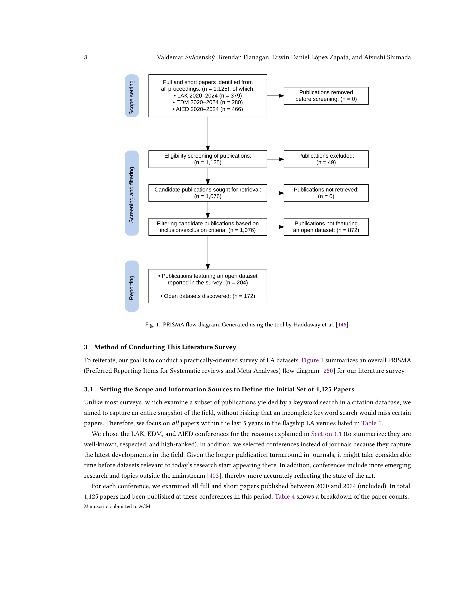
Learning analytics 분야의 3대 주요 학회(LAK, EDM, AIED)에서 2020-2024년 발표된 1,125편의 논문을 전수 조사하여, 204편의 논문에서 사용된 172개의 공개 데이터셋을 발굴하고 체계적으로 분류한 최대 규모의 서베이이다. 전체 논문의 19.0%만이 공개 데이터셋을 활용하며, 기존 서베이에서 포착하지 못한 143개의 신규 데이터셋을 식별했다. 데이터 공유 촉진을 위한 8항목 PRACTICE 가이드라인을 제안한다.
Learning analytics 분야의 공개 데이터셋 현황을 가장 포괄적으로 정리한 유용한 참고 자료이나, 서베이 논문의 특성상 방법론적 혁신보다는 정리와 분류에 초점이 맞춰져 있으며, Science of Science 관점에서의 분석적 깊이(예: 데이터 공개와 연구 영향력의 관계)가 아쉽다.
The selective use of physics knowledge in policy: how interdisciplinary physics bridges subfields and shapes policy influence
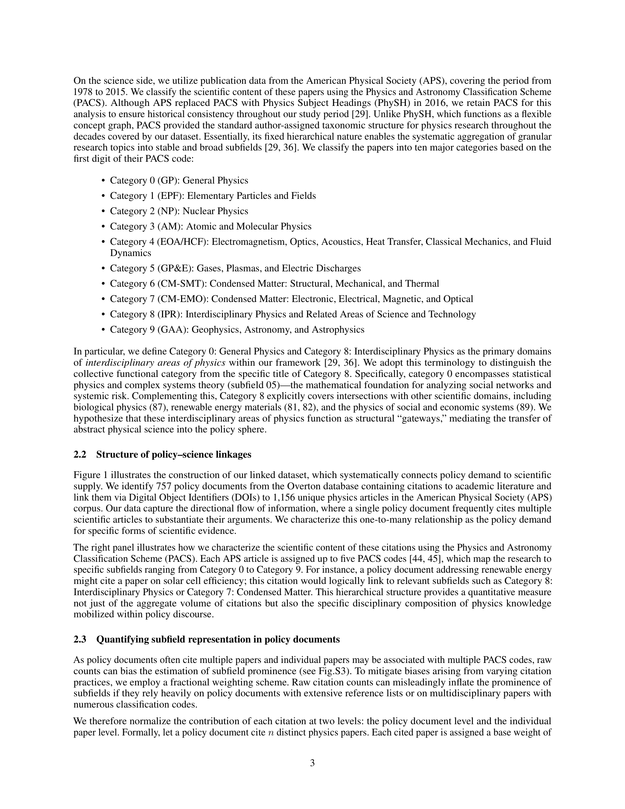
물리학 지식이 정책 문서에 선택적으로 활용되는 메커니즘을 실증 분석한 결과, 정책 문서는 물리학의 연구 생산 구조를 그대로 반영하지 않고 학제간(interdisciplinary) 분야를 불균형적으로 선호한다. Category 8(Interdisciplinary Physics)은 학술 생산의 5.5%에 불과하지만 정책 인용의 19.8%를 차지한다. 그러나 정책 가시성(visibility)과 정책 영향력(influence)은 분리되며, 지구물리학(Category 9) 인용 시 정책 영향력이 약 24% 증가하는 반면, 학제간 물리학은 영향력에 유의한 효과가 없다.
과학 지식의 정책 활용에서 가시성과 영향력의 분리를 실증한 참신한 연구로, 학제간 물리학이 정책 진입의 gateway이지만 영향력의 driver는 아니라는 역설적 발견이 Science of Science와 science policy 분야에 중요한 시사점을 제공한다.
Partisan disparities in the funding of science in the United States
1980-2020년 미국 연방정부의 과학 연구비 세출(appropriations) 데이터를 분석한 결과, 공화당이 하원이나 대통령직을 장악했을 때 과학 연구비가 민주당보다 오히려 더 많이 배정되었다. 공화당 하원 통제 시 연방 과학 펀더당 연간 약 7천만 달러 추가 지출이 관찰되며, 이러한 차이는 국방부뿐 아니라 NIH, CDC, NASA, NSF 등 다수 기관에 걸쳐 나타났다. 다만 분야별 연구비 배분 비율은 정당 통제와 무관하게 일정했다.
정치적 양극화 시대에 과학 펀딩의 초당파적 성격을 실증한 시의성 높은 연구로, 40년간의 포괄적 세출 데이터를 활용한 점이 강점이나, 인과 식별 전략의 부재와 국방 R&D의 지배적 영향에 대한 보다 세밀한 분석이 아쉽다.
Funding the Frontier: Visualizing the Broad Impact of Science and Science Funding

과학 펀딩의 다차원적 영향을 시각적으로 분석할 수 있는 웹 기반 시스템 Funding the Frontier(FtF)를 개발했다. 7M 연구 grants를 140M 논문, 160M 특허, 10.9M 정책 문서, 800K 임상시험, 5.8M 뉴스피드와 연결하는 18억 건의 인용 링크를 활용하여, 펀딩의 직접 성과(논문, 특허, 임상시험)뿐 아니라 사회적 파급효과(정책, 미디어, 시장)까지 통합적으로 탐색할 수 있는 최초의 사용자 지향 visual analytics 시스템이다.
과학 펀딩의 사회적 영향을 다차원적으로 시각화하는 야심찬 시스템으로, 18억 건의 인용 링크를 활용한 대규모 데이터 통합과 직관적 시각화 설계가 인상적이나, 시스템 논문 특유의 분석적 깊이 제한과 예측 모델의 실용성 검증이 향후 과제로 남는다.
Sci2Pol: Evaluating and Fine-tuning LLMs on Scientific-to-Policy Brief Generation

과학 논문에서 정책 브리프(policy brief)를 생성하는 LLM의 능력을 평가하고 향상시키기 위한 최초의 벤치마크(Sci2Pol-Bench, 18개 태스크)와 학습 데이터셋(Sci2Pol-Corpus, 639쌍)을 제시했다. 13개 LLM 평가 결과, 최첨단 모델(Grok, DeepSeek-R1 등)도 정책 브리프 생성에서 상당한 개선 여지가 있으며, Sci2Pol-Corpus로 파인튜닝한 Gemma-27B가 GPT-4o와 DeepSeek-V3(671B)를 능가하는 성능을 달성했다.
과학-정책 번역이라는 중요하고 과소 연구된 과제에 대해 체계적인 벤치마크와 학습 데이터셋을 최초로 제시한 견실한 연구로, 5단계 분류체계 설계, 대규모 LLM 평가, 도메인 특화 파인튜닝의 효과 입증 등 다방면의 기여가 돋보이나, 분야 편중과 소규모 데이터셋이라는 현실적 제약이 일반화 가능성을 제한한다.
Early career setback and future achievement in professional sports

초기 커리어에서 아슬아슬하게 승리를 놓친 선수(non-winner)가 장기적으로 근소하게 이긴 선수(winner)를 능가할 수 있다. 육상 4위 입상자는 동메달리스트보다 향후 4년간 평균 1.72개 vs 1.35개의 메달을 획득했으며, 직접 재대결 시 59.2%의 승률을 기록했다(p=0.0001). 테니스에서도 "unlucky loser"가 "lucky loser"보다 유의하게 높은 미래 승률을 보였다(p=8.67×10⁻⁸).
Wang et al. (2019)의 "early-career setback" 패러다임을 스포츠로 확장한 견실한 실증 연구로, 두 가지 독립적 스포츠 맥락과 다양한 robustness check가 인상적이나, 메커니즘 규명 없이 현상 기술에 머물러 있어 이론적 기여는 제한적이다.
The Rise of Large Language Models and the Direction and Impact of US Federal Research Funding
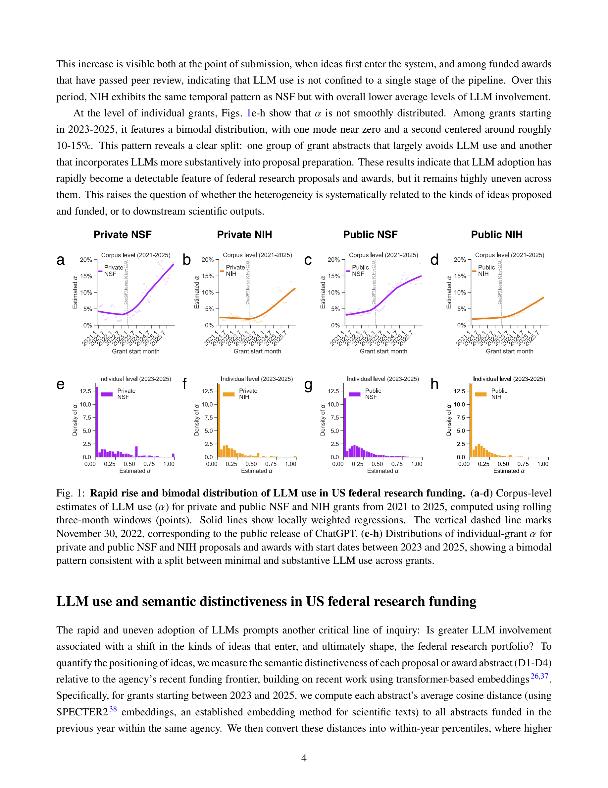
LLM 사용이 미국 연방 연구비(NSF/NIH) 제안서와 수상 과제에 급속히 확산되고 있으며, 이는 아이디어의 동질화, 선정 결과, 그리고 연구 산출물에 기관별로 상이한 영향을 미친다. LLM 활용도가 높은 제안서는 semantic distinctiveness가 4-5 percentile point 낮고, NIH에서는 LLM 사용이 선정 확률 ~4%p 증가 및 논문 산출 ~5% 증가와 연관되나 고인용 논문에는 효과가 없으며, NSF에서는 어떤 유의한 연관도 관측되지 않았다.
LLM이 미국 연방 연구비 생태계를 어떻게 변화시키고 있는지를 기밀 제안서 데이터와 공개 수상 데이터를 결합하여 체계적으로 분석한 선구적 연구로, 아이디어 동질화와 기관별 차등 효과라는 핵심 발견은 과학 정책에 즉각적 함의를 갖는다.
Unequal effects of the COVID-19 pandemic on scientists

COVID-19 팬데믹은 과학자들에게 불균등한 영향을 미쳤다. 4,535명 PI 설문 결과, 평균 총 근무시간은 주당 61시간에서 54시간으로 11% 감소했으나, 연구 시간은 24% 감소했다. 여성 과학자는 남성 대비 5% 더 큰 연구 시간 감소를, 5세 이하 자녀가 있는 과학자는 17% 더 큰 감소를 경험했으며, 이 효과는 가산적(additive)이었다.
팬데믹 초기에 과학자 집단 내 불균등한 영향을 정량적으로 보여준 시의적절하고 영향력 높은 연구로, 낮은 응답률과 자기보고 한계에도 불구하고 성별-돌봄 부담 교차점이라는 핵심 발견이 후속 정책 논의와 연구의 토대를 마련했다.
SciSciGPT: advancing human–AI collaboration in the science of science

SciSciGPT는 Science of Science(SciSci) 분야를 테스트베드로 활용한 오픈소스 multi-agent AI 연구 협력자 프로토타입이다. 5개 전문 에이전트(ResearchManager, LiteratureSpecialist, DatabaseSpecialist, AnalyticsSpecialist, EvaluationSpecialist)로 구성되어, 문헌 검색부터 데이터 추출, 분석, 시각화, 자체 평가까지 복잡한 연구 워크플로우를 자동화한다. 탐색적 파일럿 연구에서 숙련 연구자 대비 약 10%의 시간으로 동등 이상 품질의 결과를 산출했다.
SciSci 분야를 테스트베드로 한 도메인 특화 AI 연구 협력자의 설득력 있는 프로토타입으로, multi-agent 아키텍처와 자기평가 메커니즘이 잘 설계되었으나, 탐색적 평가에 머물러 실제 연구 현장에서의 효용성과 신뢰성에 대한 보다 엄격한 검증이 필요하다.
The Empowerment of Science of Science by Large Language Models: New Tools and Methods
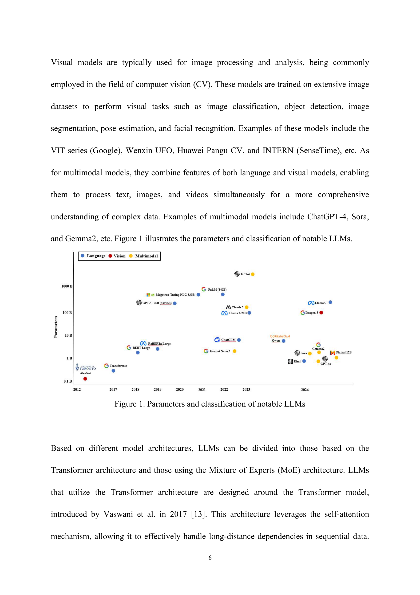
LLM의 핵심 기술(prompt engineering, RAG, fine-tuning, pre-training, tool learning)을 사용자 관점에서 체계적으로 정리하고, Science of Science(SciSci) 분야의 역사적 발전을 추적한 뒤, LLM이 SciSci에 적용될 수 있는 세 가지 방향 -- 과학적 인식(entity/relationship extraction을 통한 지식 그래프 구축), 과학적 평가(AI agent 기반), 과학적 예측(LLM 기반 multilayer network를 통한 research front 탐지) -- 을 제시하는 종합 리뷰 논문이다.
LLM 기술과 SciSci의 교차점을 폭넓게 조망하려는 시도는 의미 있으나, 기술 소개가 피상적이고, 제안된 방법론의 평가가 부재하며, 학술적 완성도가 낮아 현재 상태로는 분야에 대한 실질적 기여가 제한적이다.
Remote collaboration fuses fewer breakthrough ideas
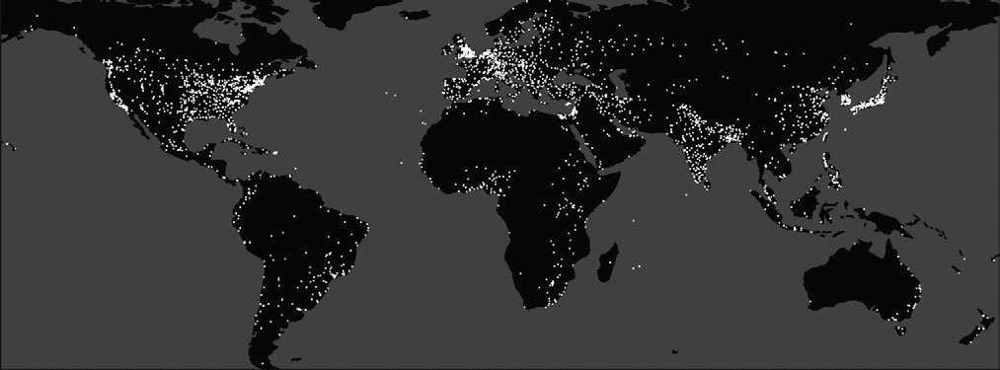
원격 협업은 돌파구적 혁신을 저해한다. 협업 거리가 0km에서 600km 이상으로 증가하면 논문의 파괴적 혁신(disruption) 확률이 28%에서 22%로, 특허는 67%에서 55%로 하락한다. 원격 팀원들은 주로 실험 수행, 데이터 분석 등 후기 기술적 작업에 집중하며, 연구 구상(conceiving) 참여 확률은 63%에서 51%로 감소한다. 즉, 디지털 기술의 발전에도 불구하고 대면 상호작용이 파괴적 아이디어 융합에 여전히 핵심적이다.
원격 협업 시대의 혁신 감소라는 퍼즐에 대해 팀 내 역할 분화라는 새로운 메커니즘을 제시한 Nature급 연구. 2,000만 편 이상의 대규모 데이터와 다층적 강건성 검증이 설득력을 높이며, 과학 정책과 조직 관리에 직접적 시사점을 제공한다.
The strain on scientific publishing
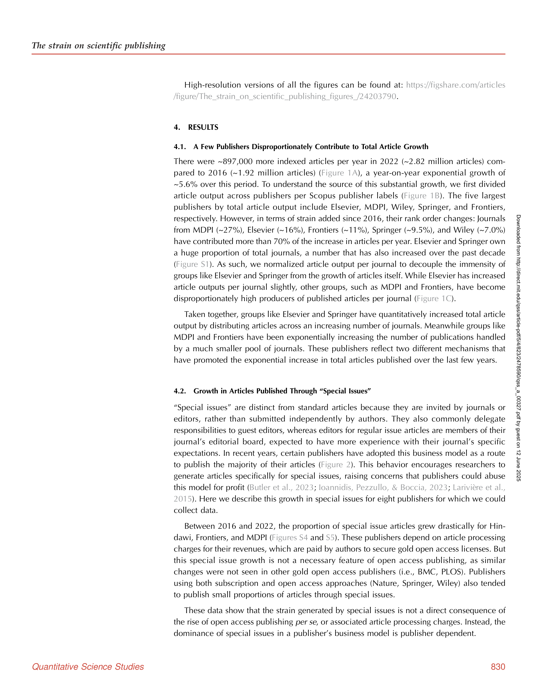
학술 출판물의 기하급수적 증가가 과학 인프라에 가하는 "strain"을 5개 데이터 기반 메트릭으로 정량화했다. 2022년 Scopus/WoS 색인 논문은 약 282만 편으로 2016년 대비 47% 증가했으나 연구자 수는 이에 비례하여 증가하지 않았다. 이 성장의 70% 이상이 5개 출판사(MDPI 27%, Elsevier 16%, Frontiers 11%, Springer 9.5%, Wiley 7%)에서 발생했으며, MDPI는 모든 메트릭에서 이상치였다: 논문 증가율 +1,080%, special issue 비율 88%, turnaround time 37일, 거절률 감소, 가장 높은 "impact inflation"(5.4).
학술 출판의 지속가능성 위기를 다중 메트릭으로 체계적으로 진단한 시의적절하고 영향력 있는 연구로, "impact inflation" 신규 지표와 special issue의 차별적 처리 문서화가 특히 가치 있으며, 출판사-연구자-연구비 기관 삼각관계의 개념 프레임워크가 정책 논의의 토대를 제공한다.
The altering landscape of US–China science collaboration: from convergence to divergence
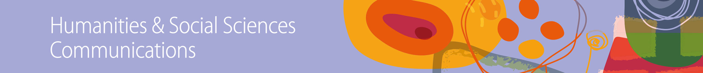
미중 과학 협력은 2000년대부터 급격히 수렴(convergence)하다가 2019년을 기점으로 발산(divergence)으로 전환되었다. 자연과학 분야에서 미중 간 Jaccard 거리는 21세기 들어 가파르게 감소하다가 2019년 이후 '시간 역전 J-커브(time-reversed J-curve)' 패턴을 보이며 증가세로 돌아섰다. 이 발산은 다른 국가 쌍에서는 관찰되지 않는 미중 고유의 현상으로, COVID-19가 아닌 지정학적 요인(특히 China Initiative)에 기인한다.
미중 과학 협력의 수렴-발산 전환을 19개 분야에 걸쳐 체계적으로 정량화한 시의적절한 연구로, 과학 외교 및 국제 협력 정책에 유용한 증거를 제공한다. 다만 방법론의 깊이(인과 추론 부재, 표본 제한)와 분석의 참신성 면에서 선행 연구 대비 증분적 기여에 가깝다.
The Scholarly Knowledge Ecosystem: Challenges and Opportunities for the Field of Information
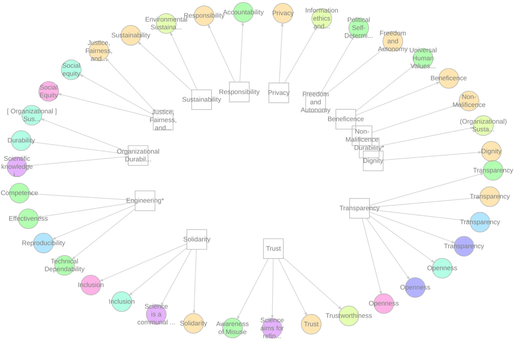
학술 지식 생태계의 핵심 연구 과제는 투명성(transparency), 재현성(reproducibility), 그리고 사회적 형평성(equity)이다. 8개 주요 보고서를 체계적으로 분석한 결과, 모든 보고서에서 공통적으로 강조하는 가치는 '투명성'이었으며, 이는 대부분 사회적 형평성 및 연대(solidarity/inclusion)와 함께 나타났다. 해결 접근법에서는 다부문 협력(multi-sectoral cooperation), 다수준 혼합 방법론(mixed methods at multiple levels), 학제간 협력(interdisciplinary collaboration)이라는 세 가지 공통 주제가 도출되었다.
학술 지식 생태계의 다양한 연구 과제와 가치를 메타 수준에서 통합한 유용한 리뷰 논문이나, 실증적 기여보다는 기존 보고서의 종합에 가까우며 제시된 해결 방향이 구체성 면에서 아쉽다. 정보학 분야 연구자에게 연구 의제 설정의 출발점으로서 가치가 있다.
제외된 항목
20_Real-World_Evidence_in_the_First_Round_o— not a paper or corrupted PDF45_Atlas_of_Science_Collaboration_1971202— not a paper or corrupted PDF
Claude Code powered by Oh-My-ClaudeCode, SKILL by Jehyun LEE jehyun.lee@gmail.com